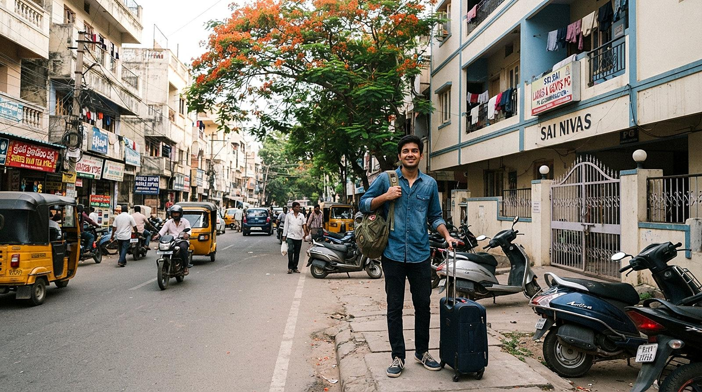
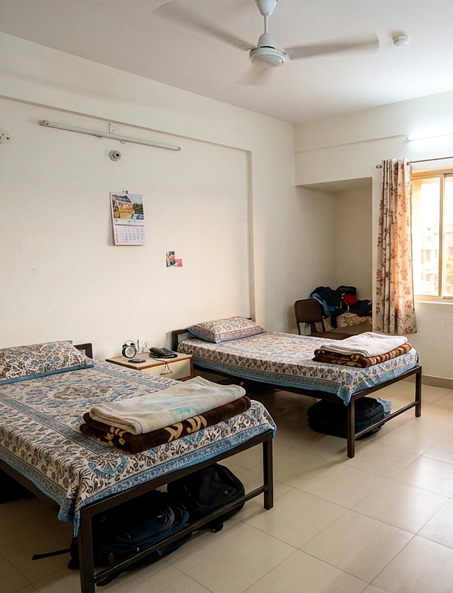
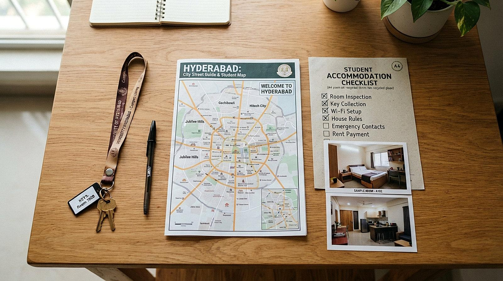
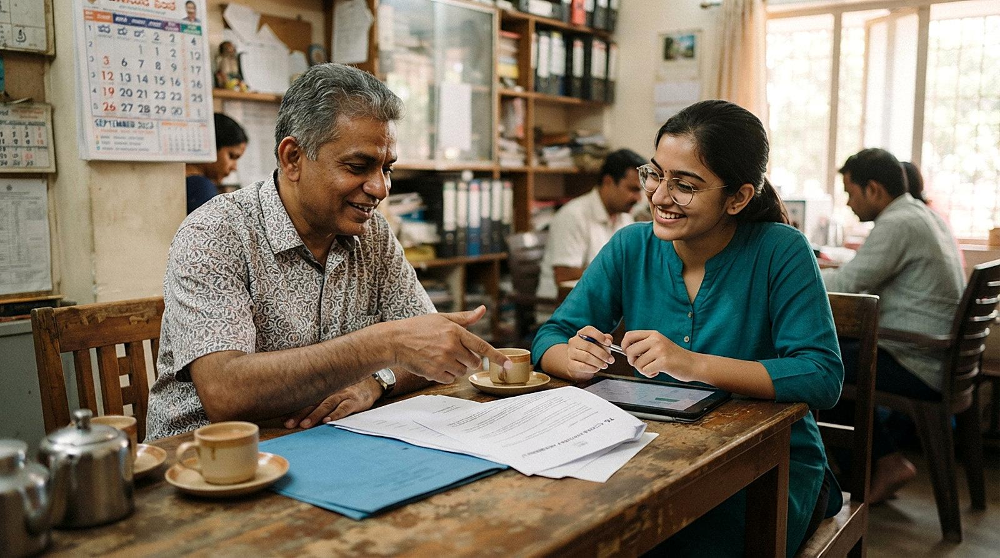

STRATEGIC OPPORTUNITY · INDEPENDENT CONCEPT
From interest to confident enrolment.
The next level of what Syncpedia already runs: built on its foundations, not in place of them.
Independent strategic concept | Proposed for discussion | Outcomes require validation.
ScrollWHAT SYNCPEDIA ALREADY RUNS
PUBLIC · REVIEWED 18 OCT 2026
A strong base is already in place
- 1
Hybrid learning
In Madhapur or online.
- 2
Direct admissions
Call-me form and WhatsApp.
- 3
Student guidance desk
Certification match, onboarding, batch timing.
- 4
CyberSync
College ranks across TG and AP.
- 5
For Colleges
Campus visit, exam, scholarships.
Our proposal builds on these. It does not replace them.
Sources: syncpedia.in homepage, flagship program page and For Students page, reviewed 18 October 2026. Pages may change.
Independent strategic concept | Proposed for discussion | Outcomes require validation.

THE QUESTION BEYOND LEADS
HYPOTHESIS
A 12-week commitment is also a relocation decision
For an outstation student, choosing an institute also means answering:
- 01Where will I live?
- 02What will it all cost?
- 03Can I trust it before I travel?
The guidance desk covers certification match, CyberSync onboarding and batch timing. These three questions were not found on the pages reviewed.
Independent strategic concept | Proposed for discussion | Outcomes require validation.
THE POTENTIAL BOTTLENECK
HYPOTHESIS
Where confidence may break
Possible friction: Stage 2 to Stage 5
- 1Discovery
- 2Research
- 3Trust
- 4Suitability
- 5Selection
- 6Enrolment
- 7Learning
possible drop-off for outstation students
Relocation anxiety and pre-arrival trust may contribute. A hypothesis to validate, not a proven finding.
Independent strategic concept | Proposed for discussion | Outcomes require validation.
THE COMMERCIAL CONSEQUENCE
ILLUSTRATIVE CONCEPT · NOT SYNCPEDIA DATA
The costliest lead is lost at the last step
Low CPL, weak progression
HIGH CAC
Higher CPL, stronger progression
LOWER CAC
A lead already paid for and lost at selection still counts in the cost. Cost per lead is intermediate; cost per enrolment is the outcome.
Independent strategic concept | Proposed for discussion | Outcomes require validation.
THE UPGRADE
PROPOSED · BUILDS ON EXISTING · NOT IMPLEMENTED
Same foundations. One level up.
- 1For Colleges pageCollege PartnershipsPermission-based access to relevant student communities.
- 2Campus challenge stepSkill BattlesPractical challenges that encourage meaningful participation.
- 3CyberSync college ranksCollege RivalriesFair, transparent inter-college engagement.
- 4Instagram and named mentorsContent FlywheelAuthentic, consent-based experiences that support trust.
- 5Hybrid option and guidance deskAsset-Light Accommodation PartnershipsExisting providers helping outstation students decide with confidence.
Sources: syncpedia.in homepage, flagship program page and For Students page, reviewed 18 October 2026. Pages may change.
Independent strategic concept | Proposed for discussion | Outcomes require validation.
WHY IT FITS
Low-risk by design
- 01
Builds on what exists
Extends current activities. Nothing is replaced.
- 02
Asset-light
Partners with existing providers. No hostel, no new building.
- 03
Evidence first
Test one friction point before any expansion.
Independent strategic concept | Proposed for discussion | Outcomes require validation.

THE UNKNOWNS THAT MATTER
What we still need to know
- ?Where does the student funnel lose prospective students?
- ?What are the stage-wise conversion rates?
- ?Which channels generate actual enrolments, not just leads?
- ?What are the current CPL and CAC?
- ?How much does relocation uncertainty influence outstation students?
MISSING BASELINE DATA
- Funnel stages
- Stage conversion
- Enrolments by channel
- CPL
- CAC
Independent strategic concept | Proposed for discussion | Outcomes require validation.
A VALIDATION OPPORTUNITY
Investigate with evidence first
- 1
Establish the current funnel baseline
- 2
Identify the most consequential friction point
- 3
Test one focused intervention
- 4
Evaluate the evidence before expanding
Independent strategic concept | Proposed for discussion | Outcomes require validation.

A CONVERSATION, NOT A PITCH
Let’s look at the funnel together.
15 minutes: I bring the framework, you bring the data. Where would you expect prospective students to lose the most confidence?

Independent strategic concept | Proposed for discussion | Outcomes require validation.
THE OPPORTUNITY IS WORTH EXPLORING.
Can we identify where student interest gets lost—and test what helps more students move forward with confidence?
- Validate the student journey.
- Understand the acquisition economics.
- Identify one opportunity worth testing.
Next Step: A focused discussion on the opportunity, existing priorities, and the right way to validate it.
Independent strategic concept | Proposed for discussion | Outcomes require validation.